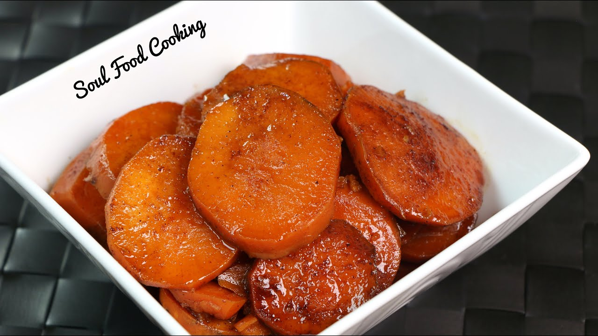

Sweet Potatoes

Sweet delicious candied yams marinated in brown sugar, butter, and everything nice
The mix-up between yams and sweet potatoes originated from the Trans-Atlantic slave trade. Yams are an important part of West African food traditions. European slave traders steered their ships across the Middle Passage, they packed yams, along with black-eyed peas, to feed their captives.
This is the ultimate yams recipe. Glazed sweet potatoes with brown sugar. It all comes together on the stovetop in just 35 mins.
Ingredients
- 3 pounds of yams
- Kosher salt
- 2 cups of orange juice
- 1 1/4 cup of brown sugar
- 1/2 teaspoon of cinnamon
- 4 tablespoons of butter
Steps
- Place the yams in a pot of cold water
- Add salt
- boil for 5-10 minutes
- mix the remaining ingredients in a saute pan and bring to a boil
- add the yams to the saute pan and keep boiling until the sauce turns into syrup.(10 mins)